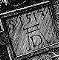

 This edition was begun on a beige Acorn Risc PC700 in 1999 and finished on a lime green Apple iMac DV in 2001, in the attic of a North Oxford town house (just across the road from the one in which Tolkien wrote The Lord of the Rings). The text was set in Monotype Plantin, a font based on designs by Christophe Plantin of Antwerp (1514–89), augmented by Computer Modern Roman typewriter by Donald Knuth (1938–). The printer's ornaments are with one exception detailed from works of Albrecht Dürer (1471–1528): Chapter I, Melancholia I (engraving, 1514); Chapter II, The Wire-Drawing Mill (watercolour and gouache on paper, 1489); Chapter III, St Jerome in his Study (engraving, 1514); Chapter IV, Portrait of a Young Venetian Woman (oils on wood panel, 1505); Chapter V, Traumgesicht (ink on paper, 1525); Chapter VI, The Large Turf (watercolour and gouache on paper, 1503); Chapter VII, The Knight, Death and the Devil (engraving, 1513); Chapter VIII, Wing of a Roller (watercolour and gouache on vellum, 1512). The ornament to §23 is believed to be tzutz, the Mayan verb for completion. Type was set using CMacTEX3.6, Tom Kiffe's port of Knuth's program (1983), employing macros adapted from those used to typeset The TEXbook (though sadly not the \plugh macro in that work's Appendix D). Indices and bibliography were prepared automatically by scripts written in MacPerl 5, Matthias Neeracher's port of Larry Wall's formatting language. Final PDF was distilled using dvipdfm by Mark A. Wicks, and the book was printed from PDF by DeHARTs Printing of Silicon Valley.
facilis descensus Averno
noctes atque dies patet atri ianua Ditis
sed revocare gradum superasque evadere ad auras
hoc opus, hic labor est … latet arbore opaca
aureus et foliis et lento vimine ramus …
▲ These long descriptions are not part of the DM4 proper, and were added as part of the HTML translation. The text of these descriptions is by David Welbourn.
The map shows the following locations, items, and connections, with Great Plaza in the top left corner. For brevity's sake, each connection is only described once, in one of the connection's two rooms:
command
+ order
+ actor
+ noun phrase: GNA {0}, definite, quantity 1
+ nouns
* “conan”
* “,”
+ action
+ verb phrase
+ verbs
* “put”
+ grammar line
+ [multiexcept]
+ noun phrase: GNA {11}, indefinite, quanity infinite
+ descriptors
+ all-word
* “every”
+ nouns
* “sword”
+ ['in'/'inside'/'into']
+ preposition
* “into”
+ [noun]
+ noun phrase: GNA {8}, definite, quantity 1
+ descriptors
+ article
* “the”
+ nouns
* “box”
The top of the diagram is labelled “Game begins”. This leads directly to the first puzzle, “Hallucinate and enter structure”, which in turn is the prerequisite for “Push lamp” (for 5 points), and “Hatch eggsac”. Both lamp and eggsac puzzles must be solved before one can “Enter Shrine” (for 10 points).
Entering the Shrine is the prerequisite for two new branches of puzzles. The first branch begins with “Wear mask”, continues to “Xibalbá” (for 5 points), and then to “Block chasm” (for 5 points). The second branch begins with "Become wayhel”, continues to “Pass Wormcast” (for 5 points), and then to “Collapse burial”.
The puzzles at the ends of both branches (Block chasm and Collapse burial) are both required to solve “Photograph and deposit artifacts". This is the final puzzle that must be solved, and so this leads to the bottom of the diagram, which is labelled “Game ends”.